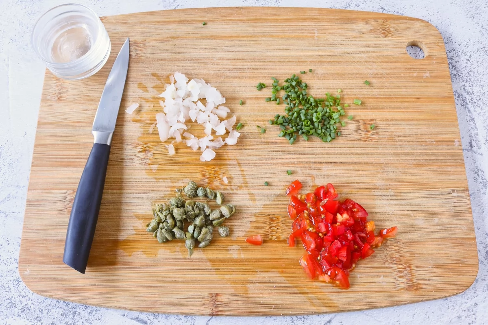
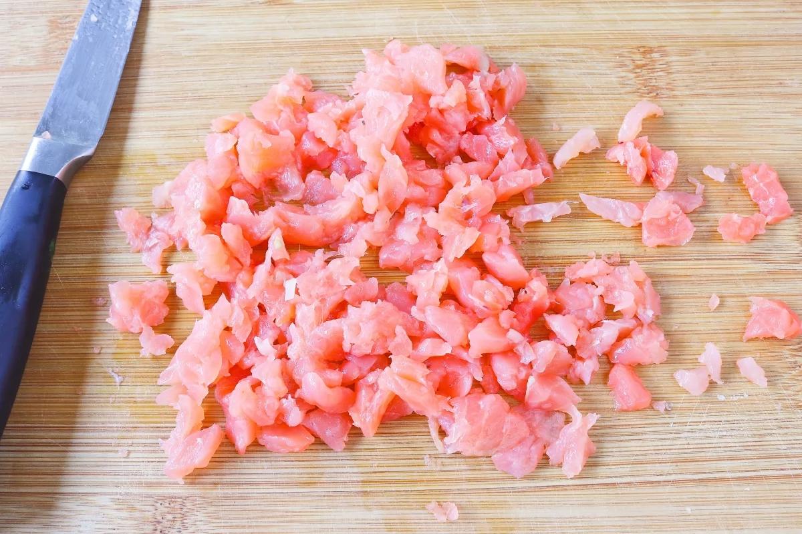
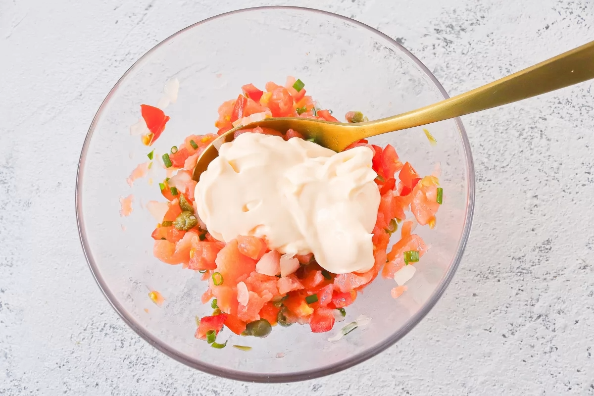
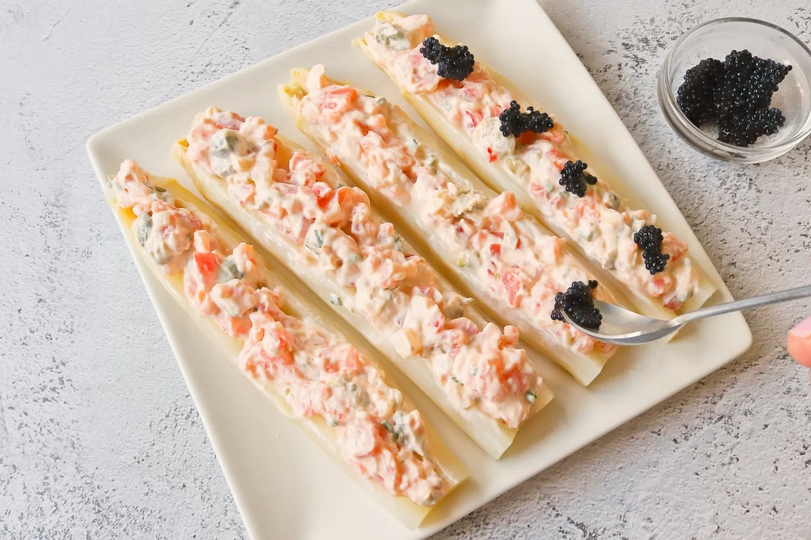

Tornar a l'inici
Espárragos rellenos
Índice de contenidos
Ingredientes
- 3 cebolletas en vinagre
- 3 tomatitos cherry
- 1 cucharada de alcaparras
- 8-10 ramas de cebollino
- 75 g de salmón ahumado
- 50 g de mayonesa
- 4 espárragos blancos cocidos gruesos
- 1 cucharada de huevas de lumpo (u otras al gusto)
Paso a paso
- Para comenzar, picamos finamente 3 cebolletas en vinagre, 3 tomatitos cherry,
1 cucharada de alcaparras y 8-10 ramas de cebollino fresco.

- Troceamos también 75 g de salmón ahumado en cortes regulares.

- Colocamos estos ingredientes troceados en un bol, reservando un poco de cebollino para la decoración final, y los
mezclamos con 50 g de mayonesa hasta obtener

- Hacemos un corte longitudinal en 4 espárragos blancos cocidos gruesos, sin llegar a las puntas.

- Con ayuda de una cucharita, rellenamos los espárragos con la mezcla preparada abriéndolos ligeramente para facilitar el proceso.

- Una vez rellenos, los decoramos con 1 cucharada de huevas de lumpo repartida entre los espárragos y el cebollino picado reservado
para dar un toque muy atractivo de color y sabor.

Resultado Final

Volver al encabezamiento principal